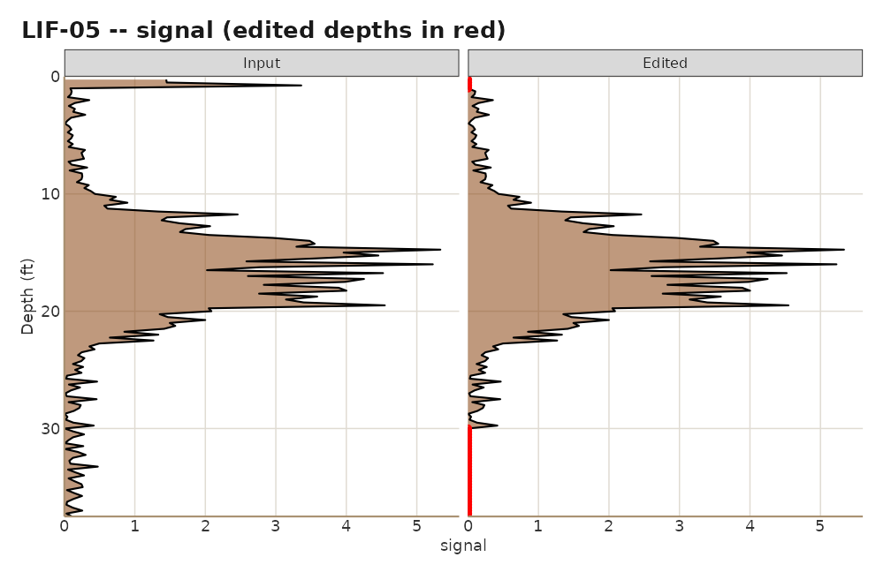

library(lifr)
demo <- system.file("extdata", "demo", package = "lifr")
lif <- lif_import(demo, verbose = FALSE)Why edit at all
LIF logs pick up things that are not product: smear in the top foot where the probe was still settling, a spike at a rod change, a fluorescent mineral seam, a stretch below total depth where the probe was already pulling back. Left in, those readings inflate peak statistics and put false hot spots on the map. Taken out silently, they leave a reviewer wondering what was removed and why.
lifr editors do the second part properly. Every edit
sets signal to a replacement value (0 by default) over a
depth window and appends a row to an edit history that travels with the
data frame and prints in the site report.
The editor family
| Function | Zeroes | Scope |
|---|---|---|
lif_editor() |
inside a depth window | one boring |
lif_editor_bulk() |
inside a depth window | every boring |
lif_keep() |
outside a depth window | one boring |
lif_zero_shallow() |
at or above a depth | every boring or a subset |
lif_zero_below_threshold() |
wherever signal is below a value | every boring or a subset |
lif_apply_edits() |
whatever a plan table says | rows of the plan |
Delete a window
lif <- lif_editor(lif, "LIF-03", top = 20, bottom = 22)
#> [lif_editor] LIF-03: zeroed 9 row(s) (20-22 ft)Several windows in one call:
lif <- lif_editor(lif, "LIF-05", delete = list(c(0, 1.5), c(30, Inf)))
#> [lif_editor] LIF-05: zeroed 37 row(s) (0-1.5 ft, 30-Inf ft)Preview first
preview = TRUE reports how many readings would change
and returns the data unchanged:
lif_editor(lif, "LIF-07", top = 0, bottom = 3, preview = TRUE)
#> [lif_editor] PREVIEW LIF-07: zeroed 12 row(s) (0-3 ft)
#> <edited_data> 3 edit(s) recorded -- provenance attached (edit_history() to inspect).
#> <lif_data> 12 boring(s), 1489 sample(s), depth 0.2-37.5 ft, 3 edit(s)
#> channels: signal, ec, hp, color
#> easting northing depth signal boring msl ec hp color
#> 1 1014.5 2017.9 0.25 2.506 LIF-01 149.6 8.87 2.79 #6B8E23
#> 2 1014.5 2017.9 0.50 0.206 LIF-01 149.6 9.31 2.41 #B0B0B0
#> 3 1014.5 2017.9 0.75 2.146 LIF-01 149.6 9.75 2.59 #6B8E23
#> 4 1014.5 2017.9 1.00 0.095 LIF-01 149.6 9.40 2.83 #B0B0B0
#> 5 1014.5 2017.9 1.25 0.208 LIF-01 149.6 10.38 2.97 #B0B0B0
#> 6 1014.5 2017.9 1.50 0.098 LIF-01 149.6 9.38 2.68 #B0B0B0
#> 7 1014.5 2017.9 1.75 0.213 LIF-01 149.6 10.07 2.72 #B0B0B0
#> 8 1014.5 2017.9 2.00 0.148 LIF-01 149.6 9.48 3.08 #B0B0B0
#> 9 1014.5 2017.9 2.25 0.050 LIF-01 149.6 10.04 2.86 #B0B0B0
#> 10 1014.5 2017.9 2.50 0.003 LIF-01 149.6 9.46 3.01 #B0B0B0
#> # ... 1479 more row(s)Keep a window instead
When the honest description is “the clean interval is 6 to 28 ft”, say that directly rather than as two deletes:
lif <- lif_keep(lif, "LIF-02", top = 6, bottom = 28)
#> [lif_keep] LIF-02: zeroed 55 row(s) outside 6-28 ftThe audit row records the kept span and the zeroed rows are its complement. The report’s log plots read that note and shade the zeroed depths, not the kept ones.
Whole-site helpers
lif <- lif_zero_shallow(lif, depth = 1)
#> [lif_zero_shallow] zeroed 48 row(s) above 1 ft across 12 boring(s)
lif <- lif_zero_below_threshold(lif, threshold = 0.5, borings = c("LIF-01", "LIF-04"))
#> [lif_zero_below_threshold] zeroed 246 row(s) below 0.5 across 2 boring(s)Edit plans in a CSV
For a real site, keep the edits in a file next to the data. One row per edit:
boring,action,top,bottom
*,delete,0,1
LIF-03,delete,20,22
LIF-02,keep,6,28
LIF-05,delete,30,-
boring: a boring name, or*for every boring (delete rows only). -
action:delete(default),clean(an alias), orkeep. -
top,bottom: blank means the function’s own default, so30,reads “from 30 ft to the bottom of the boring”.
Validate the plan before applying it. Every row is checked first, so a typo in row 5 cannot half-apply rows 1 to 4:
plan <- data.frame(boring = c("*", "LIF-03", "LIF-02", "LIF-05"),
action = c("delete", "delete", "keep", "delete"),
top = c(0, 20, 6, 30),
bottom = c(1, 22, 28, NA))
fresh <- lif_import(demo, verbose = FALSE)
lif_apply_edits(fresh, plan, validate = TRUE)
#> [lif_apply_edits] Validation summary (no changes applied):
#> boring action top bottom n_rows_affected
#> * delete 0 1 48
#> LIF-03 delete 20 22 9
#> LIF-02 keep 6 28 55
#> LIF-05 delete 30 NA 31
fresh <- lif_apply_edits(fresh, plan)
#> [lif_apply_edits] Applied 4 edit(s).A * row that would span every reading at the site is
refused; wiping the whole dataset is never a one-liner.
The audit trail
edit_history(fresh)
#> timestamp fn boring top bottom value
#> 1 2026-09-04 20:42:47 +0000 lif_editor_bulk <NA> 0 1 0
#> 2 2026-09-04 20:42:47 +0000 lif_editor LIF-03 20 22 0
#> 3 2026-09-04 20:42:47 +0000 lif_keep LIF-02 6 28 0
#> 4 2026-09-04 20:42:47 +0000 lif_editor LIF-05 30 1000 0
#> n_rows_changed notes
#> 1 48 <NA>
#> 2 9 <NA>
#> 3 55 kept 6-28 ft; zeroed rows outside these windows
#> 4 31 <NA>Each row carries a time-zone-stamped timestamp, the function, the
boring (NA means every boring), the window, the replacement
value, how many rows changed, and any notes. Save it beside the data for
the project record:
edit_history_save(fresh, "C:/Projects/MySite/edit_log.csv")Edited frames print a provenance banner so nobody mistakes them for raw data:
print(fresh, n = 2)
#> <edited_data> 4 edit(s) recorded -- provenance attached (edit_history() to inspect).
#> <lif_data> 12 boring(s), 1489 sample(s), depth 0.2-37.5 ft, 4 edit(s)
#> channels: signal, ec, hp, color
#> easting northing depth signal boring msl ec hp color
#> 1 1014.5 2017.9 0.25 0 LIF-01 149.6 8.87 2.79 #6B8E23
#> 2 1014.5 2017.9 0.50 0 LIF-01 149.6 9.31 2.41 #B0B0B0
#> # ... 1487 more row(s)Carrying the history through dplyr
dplyr verbs (filter(), mutate(),
select()) rebuild the data frame and drop non-standard
attributes, so a pipe step silently discards the history. Save it before
and restore it after:
saved <- lif_get_edits(fresh)
sub <- dplyr::filter(fresh, boring %in% c("LIF-02", "LIF-03"))
sub <- lif_set_edits(sub, saved)Base subsetting with [ keeps the attribute, so
fresh[fresh$boring == "LIF-02", ] needs no rescue.
Corrections are edits too
hp_correction() removes the hydrostatic component of
hydraulic push pressure, lif_downsample() thins the depth
spacing, and both record themselves in the same history so the report
can list them:
fresh <- hp_correction(fresh, water_table = 6)
thin <- lif_downsample(fresh, target_interval = 1, preserve_above = 5)
#> lif_downsample: 1489 -> 596 rows (40% retained, target_interval=1 ft)
tail(edit_history(thin), 2)
#> timestamp fn boring top bottom value
#> 5 2026-09-04 20:42:47 +0000 hp_correction <NA> NA NA NA
#> 6 2026-09-04 20:42:47 +0000 lif_downsample <NA> NA NA NA
#> n_rows_changed notes
#> 5 1489 gradient=0.433; water_table=6
#> 6 893 target_interval=1; preserve_above=5; n_in=1489; n_out=596Seeing what changed
qc_compare() draws input beside edited for every boring
that differs, with the changed depths in red, and skips the rest:
plots <- qc_compare(lif_import(demo, verbose = FALSE), fresh)
#> qc_compare: 12 boring(s) with changes plotted, 0 unchanged.
names(plots)
#> [1] "LIF-01" "LIF-02" "LIF-03" "LIF-04" "LIF-05" "LIF-06" "LIF-07" "LIF-08"
#> [9] "LIF-09" "LIF-10" "LIF-11" "LIF-12"
plots[["LIF-05"]]
The site report does the same for every boring on its Boring logs tab, with the zeroed windows shaded.